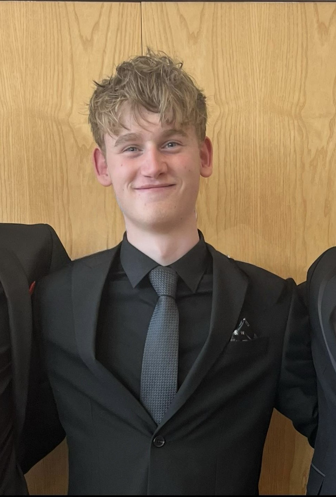

I am a second-year Cyber Security undergraduate at NTU focused on Security Operations, systems architecture, and threat analysis. Building on First Class performance in low-level Systems Programming and Systems Analysis, my practical work spans custom multithreaded security tools, cryptographic implementations, and Cisco routing and switching configuration in live lab environments.
My goal is to specialise in Cyber Security. Despite not knowing the direct path of cyber security I want to go down yet, I want to be able to create and design advanced and secure systems through the skills I gain over the years. I am eager to apply my technical knowledge in challenging, real-world environments where precision and rapid decision-making are critical.
I combine technical discipline with proven collaborative leadership. During my university Systems Analysis group project, I actively managed team roles and coordinated task assignments to ensure our group delivered a cohesive technical solution. I pair this academic teamwork with my experience directing high-pressure operations in hospitality and my role as a Sports Leader. Whether I am aligning a technical team on a project or communicating under fire in a fast-paced environment, I know how to manage stress and take full ownership of the final outcome